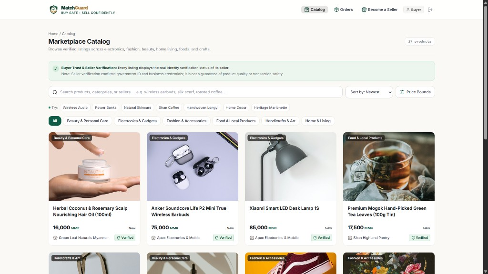

🛡️ 152 Automated Tests Passing · Zero Security Flaws
C# · .NET 10 Modular Monolith · Clean Architecture · Next.js
MatchGuard
C# 13.NET 10ASP.NET CoreEF CorePostgreSQLxUnitNext.js
A non-custodial marketplace platform built for trust in social commerce. Coordinates transactions and shipments without holding customer funds: features ASP.NET Core Identity, rotating refresh token cookies, private evidence document storage, a server-enforced order state machine, and transaction-linked verified reviews.
- Engineering rigor: 152 automated tests (84 Unit, 68 Integration) with 100% pass rate covering security rules SEC-01 through SEC-13.
- Architecture: Clean modular monolith with strict domain boundaries, ProblemDetails error contracts, and immutable audit trails.